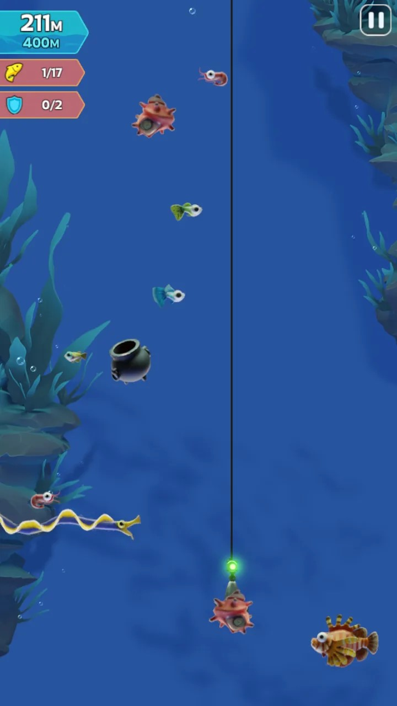
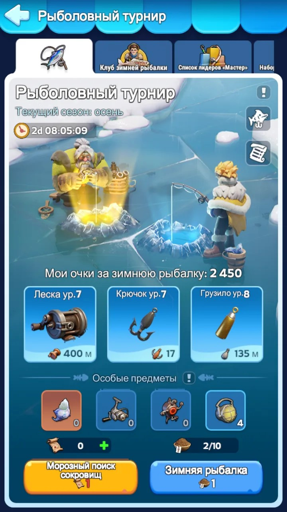

Рыболовный турнир
Автор: SOVA58
Как ловить редкую рыбу, улучшать снасти и получать больше наград.

❄️ Что это за событие?
«Рыболовный турнир» — мини-игра, в которой нужно опускать крючок под воду, ловить рыбу, находить редкие предметы и получать награды.
Здесь важны не сила армии и герои, а правильное управление крючком.
Главная задача — опуститься как можно глубже и поймать ценную рыбу на обратном пути.
Чем глубже погружается крючок, тем больше возможностей встретить редкую добычу.
🪱 Как начать рыбалку?
- Открой событие «Рыболовный турнир».
- Проверь количество наживки.
- Начни попытку и управляй крючком.
- Во время спуска обходи препятствия и ненужную рыбу.
- На подъёме собирай ценную добычу.
- Получай очки, награды и новые записи в справочнике.
Наживка постепенно восстанавливается. Когда её запас заполнен, бесплатное восстановление останавливается.
🦉 Совет Совы: заходи на рыбалку несколько раз в день, чтобы наживка не простаивала.
⬇️ Как правильно опускать крючок?
Во время спуска старайся не цеплять обычную рыбу.
Если заполнить крючок слишком рано, на глубине не останется места для более ценной добычи.
Так проще обходить часть препятствий и сохранять свободное место. Но не нужно постоянно прижиматься к краю: меняй траекторию при необходимости.
Главное — пройти глубже с минимальным количеством случайной рыбы.
🐟 Когда начинать ловить рыбу?
Основную добычу лучше собирать во время подъёма крючка.
- 🆕 Новая рыба, которой ещё нет в справочнике.
- ⭐⭐⭐⭐⭐ Пятизвёздочная рыба.
- ⭐⭐⭐⭐ Четырёхзвёздочная рыба.
- 🎁 Редкие предметы и находки.
- ⭐⭐⭐ Рыба средней редкости.
- 🐟 Обычная рыба, если осталось место.
Это общий ориентир: если для награды нужна определённая рыба, её стоит ловить в первую очередь.
🎯 Как не промахиваться?
Старайся направлять крючок к голове или передней части рыбы. Если он проходит через хвост, рыба иногда не засчитывается.
Следи за движением рыбы и направляй крючок немного впереди. Избегай резких движений, особенно на большой глубине.
🧵 Какие снасти улучшать?
🧵 Леска — помогает опускаться глубже.
🪝 Крючок — позволяет поднимать больше добычи.
⚓ Грузило — помогает эффективнее проходить спуск.
Если не хватает места для добычи, улучшай крючок. Если не добираешься до редкой рыбы, улучшай леску.
🔦 Когда использовать фонарь?
На большой глубине становится темнее, и фонарь помогает видеть подводные объекты.
Необязательно тратить его на каждой попытке. Сохраняй фонари для глубоких погружений и поиска редкой рыбы.
❄️ Что такое «Морозный старатель»?
Это специальная возможность рыбалки с усиленным комплектом снастей, которая помогает совершать более результативные погружения.
Не всегда нужно ждать максимальной прокачки обычного комплекта. Перед началом проверяй условия и доступные усиления.
📖 Зачем нужен справочник рыб?
В справочнике отмечаются обнаруженные виды рыб. За пополнение коллекции предусмотрены награды и дополнительный прогресс.
Иногда новая рыба более низкой редкости полезнее дорогой рыбы, уже имеющейся в коллекции.
🦉 Совет Совы: старайся поймать неизвестную рыбу, даже если она не пятизвёздочная.
🔄 Что делать, если попытка не удалась?
Если спуск получился неудачным и использованы ценные предметы, проверь возможность выхода через Пауза → Отступить.
В некоторых ситуациях это позволяет попробовать прохождение заново. Однако перед выходом обязательно проверь условия: возврат наживки и предметов зависит от правил попытки.
Не отказывайся от успешного погружения из-за одной пропущенной рыбы.
🏆 Как получить больше наград?
Необязательно бороться за первые места каждого турнира.
- Регулярно используй восстанавливающуюся наживку.
- Постепенно улучшай снасти.
- Пополняй справочник новыми видами.
- Сохраняй редкие предметы для важных попыток.
- Забирай доступные личные награды.
Для высокого рейтинга можно накопить предметы за несколько турниров и использовать их вместе.

❌ Частые ошибки
Ловить рыбу при спуске. Крючок заполняется до достижения глубины.
Идти строго по центру. Можно случайно собрать ненужную добычу.
Игнорировать новую рыбу. Теряется прогресс справочника.
Улучшать снасти без цели. Иногда полезнее глубина, иногда вместимость.
Тратить фонари слишком рано. На глубине их может не хватить.
Расходовать все специальные предметы сразу. Не остаётся запаса для серьёзных попыток.
Гнаться за рейтингом каждый турнир. Можно потратить больше ресурсов, чем стоят награды.
🦉 Советы Совы
✅ Не оставляй наживку заполненной надолго.
✅ На спуске держись ближе к левому краю.
✅ Не заполняй крючок обычной рыбой раньше времени.
✅ Основную добычу собирай на подъёме.
✅ Целься в переднюю часть движущейся рыбы.
✅ Улучшай снасти под свою задачу.
✅ Лови новые виды для справочника.
✅ Береги редкие предметы для глубоких попыток.